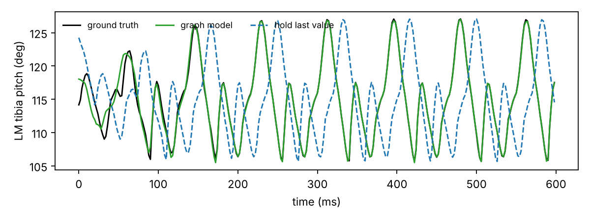

01The question
A walking fly coordinates six legs. Each leg cycles between stance (on the ground, pushing) and swing (in the air, moving forward), and the legs keep consistent phase relationships with one another. In the classic tripod gait, front and hind legs on one side move together with the middle leg on the other side.
If legs are coordinated, the state of the other legs should reveal a lot about any one leg. Treating the six legs as nodes of a graph lets us ask this precisely with graph neural networks, the tool I use daily for 3D meshes. It is also a small step toward the question that interests me most: how the structure of a network, whether a body plan or a connectome, shapes the motor patterns it produces.
02The test: imputing a delayed leg
For a target leg k at time t, the model sees the last 20 ms of state (7 joint angles and stance) of the other five legs, but only a 20 ms window of leg k that ends d ms earlier. It must predict leg k's seven joint angles at time t.
| Model | What it can use |
|---|---|
| hold last value | Repeats the last delayed observation (trivial floor) |
| ■ own history only | Same network, but each leg only talks to itself: pure extrapolation |
| ■ anatomical leg graph | Messages along the 7 anatomical edges |
| ■ fully connected + attention | Messages between all legs; attention weights are learned |
03Process
NeuroMechFly walking
CPG controller from the FlyGym tutorials, tripod / tetrapod / wave gaits, 6 seeds × 3 s, random coupling strength. simulate.py
42 joint angles
7 actuated DoFs per leg, ground contact forces and thorax position at 500 Hz (~27k frames).
Graph attention
2 attention layers over 6 leg nodes, with a fixed adjacency mask (self / anatomical / full). legraph.py
4 experiments
Held-out seeds, unseen gait, attention maps, delay sweep. train.py, delay_sweep.py
Everything runs on a laptop CPU in about 15 minutes. Errors are reported as RMSE in degrees on the hidden leg's joint angles, on data never used for training.
04Result 1: the other legs help
Trained on seeds 0 to 3, tested on seeds 4 and 5. The target leg is seen 20 ms late, about a quarter of the ~83 ms step cycle.

The staler the leg, the more the others matter
05Result 2: a useful negative result
Trained on tripod and tetrapod only, tested on the wave gait, a coordination pattern never seen during training.
06Result 3: which legs does the model listen to?
07Limitations and next steps
- The coordination is imposed by the controller. The CPG and preprogrammed steps define the gaits, so the models recover what the controller encodes. This validates the method; it is not a finding about flies. In this simulation, the tetrapod and wave gaits also make the fly turn rather than walk straight.
- Emergent coordination. Repeat the test with the rule-based and hybrid controllers and on rough terrain, where coordination emerges from local rules and sensory feedback.
- Real data. Apply the same imputation test to 3D kinematics of tracked flies, where coordination is not designed but measured.
- From body graph to wiring diagram. Replace the 6-node leg graph by a connectome-constrained network, and test whether the wiring predicts the same inter-leg dependencies.
08Reproduce
git clone https://github.com/zaineb-ibork/leg-graph && cd leg-graph
pip install -r requirements.txt
python simulate.py --out data --duration 3.0 --seeds 0 1 2 3 4 5 # ~4 min CPU
python train.py --data data --out results # ~7 min CPU
python delay_sweep.py --data data --out results